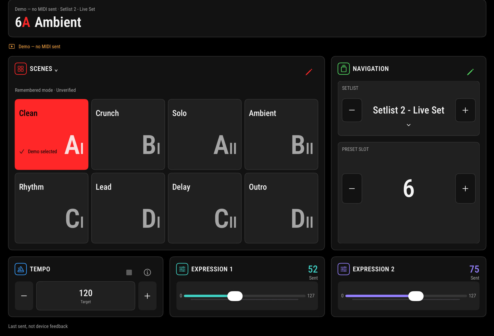
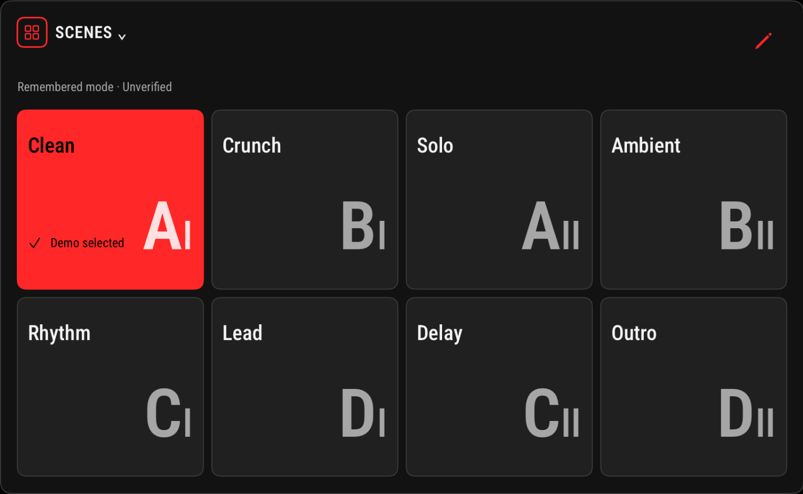
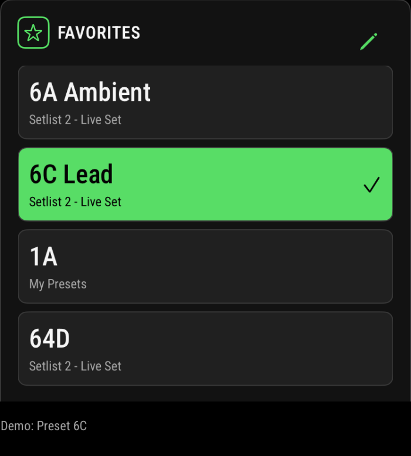
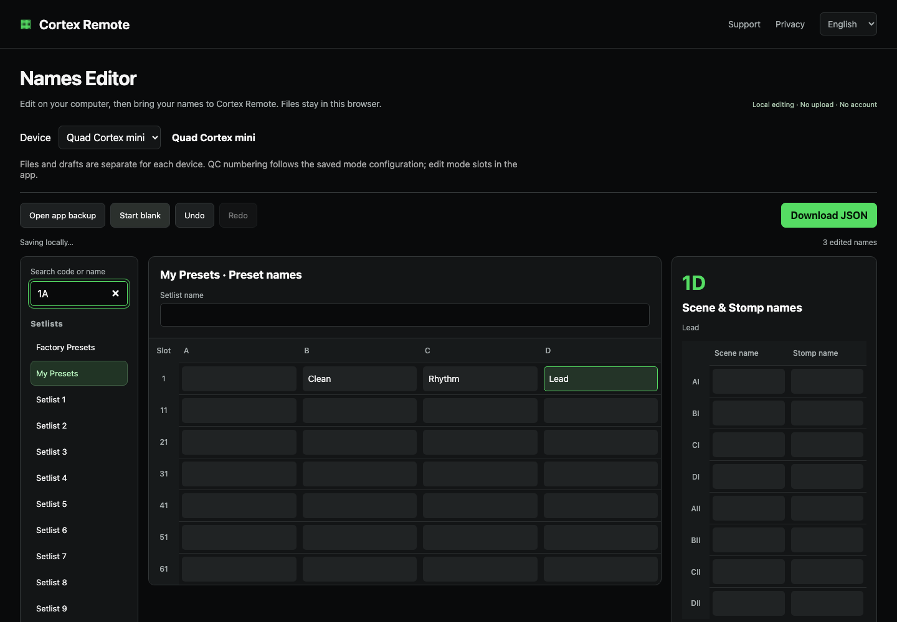

{kind=link}
Your controls. Your layout.
Drag panels into place, hide what you do not need, and keep your most-used controls within reach.
Currently in beta
Bring presets, scenes, tempo and expression controls onto your iPad. Arrange the screen around the way you play.
For iPad · Quad Cortex mini · iPadOS 26+


Navigate setlists and presets, select scenes, and access Stomp commands from clear touch controls. Give your sounds names you recognize at a glance.
Drag panels into place, hide what you do not need, and keep your most-used controls within reach.
Bring presets from different setlists together and load them with one tap.

Tap manually, enter a target, or follow incoming MIDI clock when configured.
Access two expression controls through familiar sliders.

Lock editing and arrangement while deliberate performance controls remain usable.
Plus Tuner, Gig View and mode controls.

Prepare preset, scene and Stomp names on your computer. Paste from a spreadsheet, save your work locally, and download a JSON file for the updated app.
Open Names EditorPower the mini separately and connect through a supported MIDI data connection.
Select MIDI output and the matching channel. Add input and device MIDI Out configuration when you want feedback.
Name sounds, arrange panels and add Favorites.
No device nearby? Explore with Demo.
Read the connection guideI play at church every week, moving between different songs and presets. My iPad was already there for sheet music. Cortex Remote began with a simple idea: make the mini easier to control from the screen already in my setup.
An iPad running iPadOS 26.0 or later and a separately powered Quad Cortex mini. Use a compatible data connection, such as a USB-C data cable with any adapter required for your iPad. Select the MIDI output and match the device's input channel.
Yes. Demo lets you explore the interface without transmitting MIDI to hardware. The screenshots on this page use Demo.
No. This is a performance controller, not a tone editor. Preset, scene and Stomp names are local labels you enter in the app; they are not downloaded from the mini.
Not automatically. Tempo following requires MIDI Clock Out on the device and input selection in the app. Preset, scene and expression feedback needs matching MIDI Out assignments on the mini. Unconfigured changes may remain unknown; a sent command is not hardware acknowledgement.
Entering a target or using the tempo −/+ controls sends four timed tap commands once. This is not direct numeric BPM programming. Target, local estimate and incoming clock are identified separately. Tuner Open/Close controls the device screen; the app does not show tuning pitch.
No. It protects editing, arrangement, navigation swipes and numeric editors. Deliberate preset, scene, Stomp, tempo and expression controls remain usable. Tap to lock; hold for one second to unlock.
The editor is live, but its current downloads and selective name import require the updated app. The original approved beta does not support this workflow. Keep a backup and wait for an app build that explicitly includes this compatibility.
A separate original Quad Cortex profile with A–H and Hybrid presentation is in development. It is Demo only: original-QC live MIDI remains disabled pending physical acceptance. This page's main app features describe Quad Cortex mini.
App settings and names stay on your iPad unless you choose to export or share them. There are no app accounts, advertising or developer-operated analytics. The Names Editor processes files in your browser and saves a local draft; clear that draft on shared computers.
Cortex Remote is currently in TestFlight beta. Contact IOTA Lab at jk8tge@iotalab.biz to ask about participation. TestFlight is Apple's app for installing beta versions. There is no public App Store download listed on this page.
{kind=link}
{kind=link}
{kind=link}
{kind=link}
{kind=link}